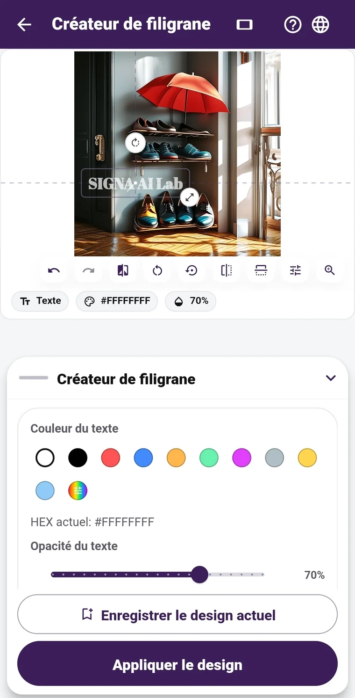

01 · FILIGRANE · Ajout de filigranes gratuit, sans limite d’utilisation
Filigranez jusqu’à 12 photos à la fois
Choisissez une police pour votre nom ou importez votre logo. Vous pouvez aussi composer un logo avec vos initiales, photographier quelques mots écrits à la main ou signer sur l’écran. Réglez la couleur et l’opacité du texte, puis adaptez le placement et la taille à chaque photo. Gardez votre modèle pour la prochaine série. Activez le signal SIGNA si vous souhaitez l’ajouter en même temps.
Portrait ou paysage · Jusqu’à 12 photos · Position réglable pour chaque photo · Modèles enregistrés · Polices supplémentaires avec Pro
 Voir la capture en grand ↗
Voir la capture en grand ↗
